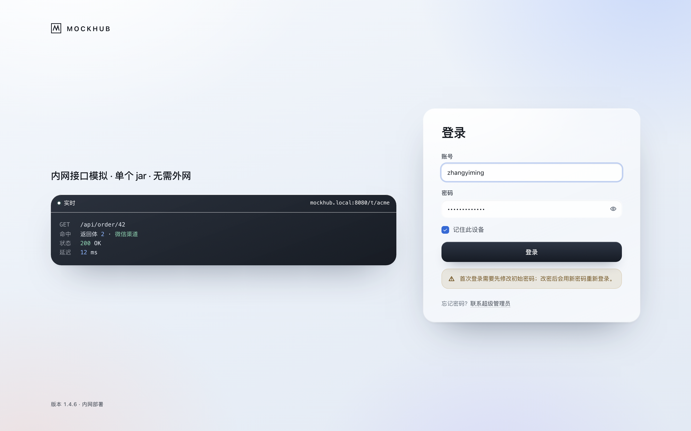
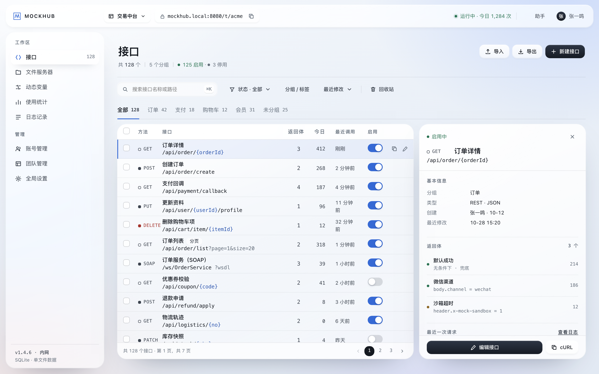
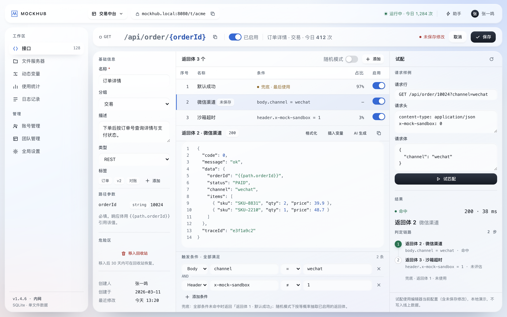
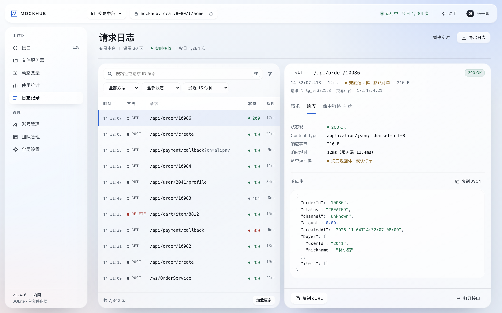
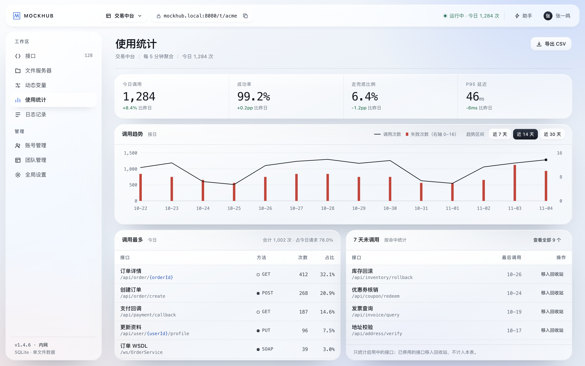
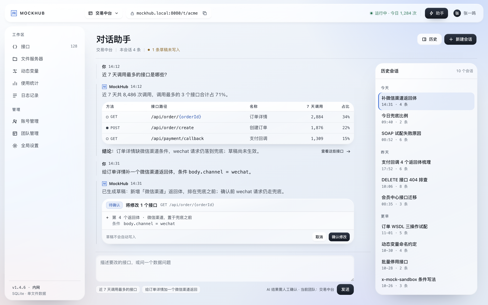
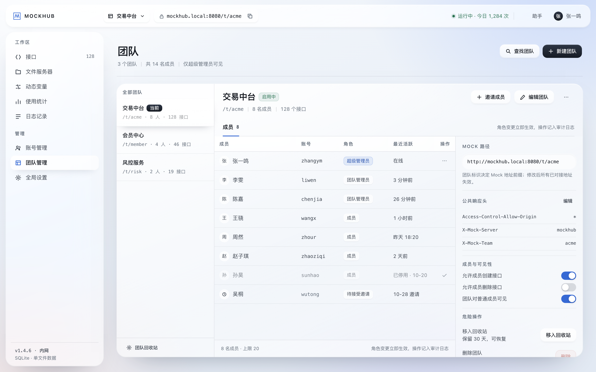

内网账号登录 · 产品事实与表单同屏，首次改密状态可见
网格底 + 浮起玻璃登录卡 + 深色样例
把 MockHub 从「一叠边框卡片的平铺后台」改成一层浮起来的玻璃工作台：冷调渐变网格做底，状态条、侧栏、表格都取同一套玻璃配方——半透明、30px 背景模糊、1px 顶部高光、22px 圆角、大而软的投影；蓝色只表示「当前 / 进行中」，红色只表示破坏性。

内网账号登录 · 产品事实与表单同屏，首次改密状态可见
网格底 + 浮起玻璃登录卡 + 深色样例

主屏：7 列接口表 + 400px 玻璃检视器
方法灯、路径参数高亮、选中行常驻检视

返回体工作区：变体与条件摘要、JSON 编辑器、试配同屏
基础信息 236 / 返回体 / 试配 320 三栏

主从对照：请求、响应、命中链路三态检视
列表 520 常驻，不离开列表就能排障

读数行替代指标卡：14 天曲线 + 调用最多 / 闲置接口
单条蓝色折线，红色小柱表示失败

问答与数据回答，写操作固定为待确认草稿 · 助手为全局入口，任何页面可从页头唤起
无气泡：左侧竖线 + 标签区分说话人

团队列表、成员角色与团队设置，权限一眼可辨
超管 / 团队管理员 / 成员用 chip 区分